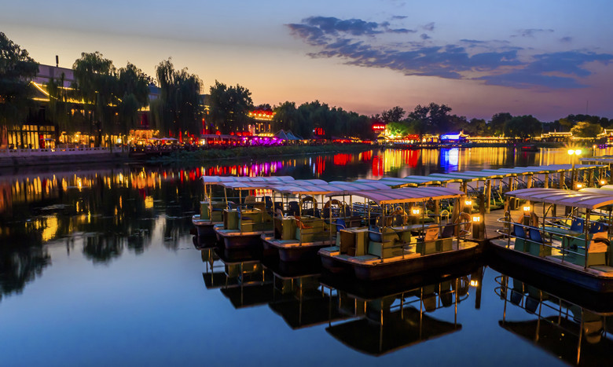
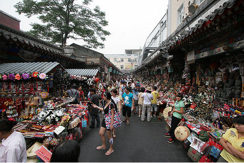
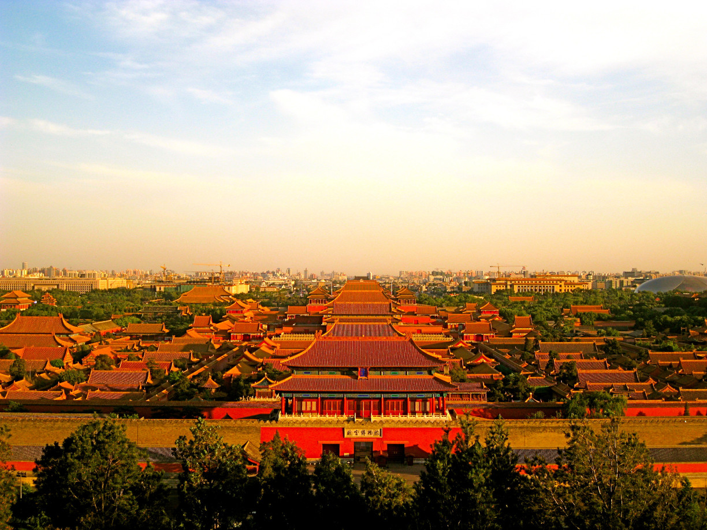
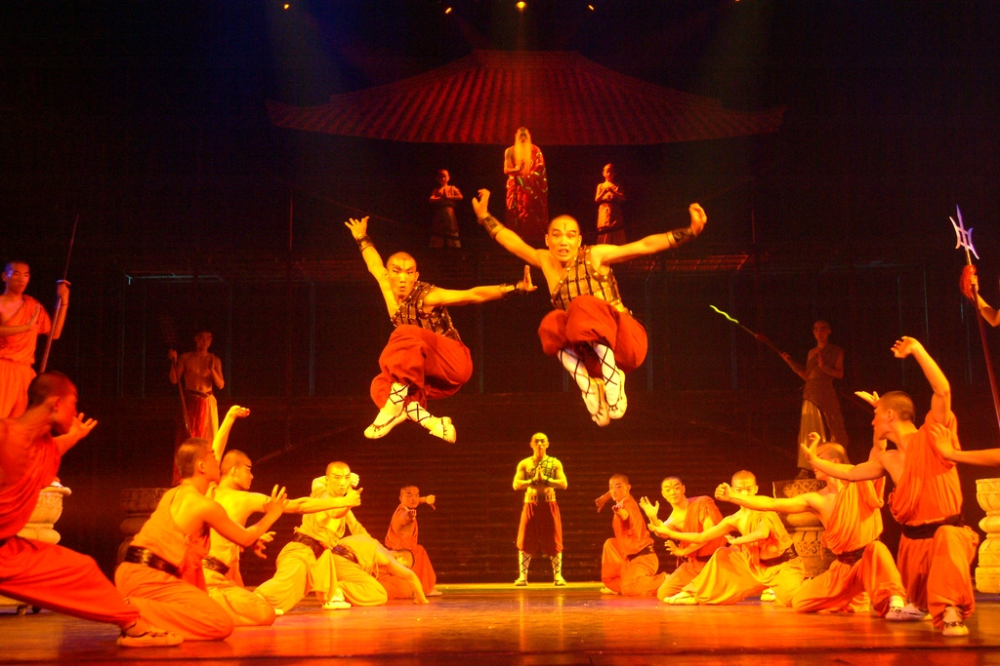
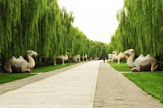
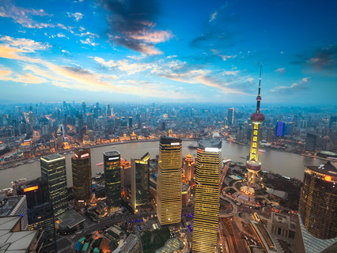

| Arrival in Beijing | Beijing Streets | Wangfujing Street |
|---|---|---|
| |
 |  |
| Our tour starts from your arrival in Beijing airport, you will see our tour guide waiting for you in arrival exit. Then we will transfer you to the Sunworld Hotel in central Beijing - Wangfujing Street. | The first day is free for you, you can walk along the most famous street in Beijing with lots of shopping malls, restaurants, snack alleys, etc. | Wangfujing is a must-visit place in Beijing. (Unlike other travel agencies choose hotel in remote area, we choose hotel in the very center of Beijing for you to feel real Chinese life. |
| Tiananmen Square | Jingshan Park | Beijing Red Theater |
|---|---|---|
 |
 |  |
| In the morning,A Bird's Eye View of Forbidden City at Jingshan Parkand other members in the lobby, we drive to the Tiananmen Square, you will enter the Imperial Palace, also known as the Forbidden City. | After we exit the Forbidden City, we will enter Jingshan Park where we will see local Chinese residents and we will climb the hill inside the park, when we reach the top of the hill, we will enjoy the bird view of the whole Forbidden City and Beijing central city, which is a highlight of today. | At noon, we will have lunch at a superior Chinese restaurant. In the afternoon, we visit the Temple of Heaven. In the evening we will arrange a lively wonderful Chinese Kung Fu Show at Beijing Red Theater, then we drive back to hotel. |
| Badaling Great Wall | Sacred Way | Shanghai |
|---|---|---|
 |
 |  |
| In the morning, be prepared with your wearings and Badaling Great Wall shoes since we are going to hike the Badaling Great Wall. You can choose hike or take cable car(cable car ticket not include) to reach the top of the great wall. | At noon, we will have lunch at the Jade Museum near the great wall. After lunch, we will go to the Sacred Way which are encircled in the shadow of Longevity Mountain. | At the hotel, our package finished. You need find your own way to the airport for your homeward flight. We suggest you reserve a taxi at the hotel reception beforehand to save waiting time of taxi. Alternatively, you may also wish to stay longer in Shanghai or fly to other China cities. |
| Price List | |
|---|---|
| Numbers of people | Usual Price |
| Single | $1120 |
| Dual | $2200 |
| Triple | $3300 |
| Four and above | $1100 for each |